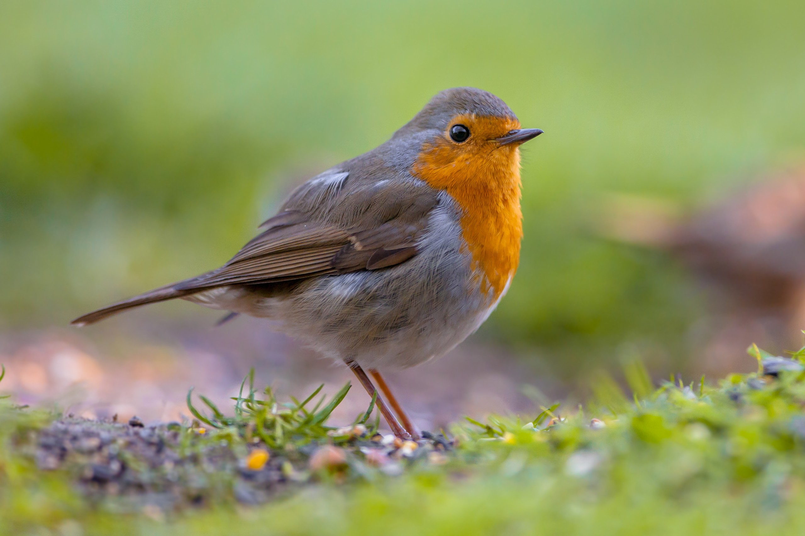

- Aquila imperial iberica
- Una de las aves rapaces más icónicas y en peligro de extinción, exclusiva de la península ibérica. Vive en bosques y zonas de matorrales, como en Doñana o la Sierra Morena.
- Buitre leonado
- Una de las mayores aves carroñeras de España, presente en cañones y zonas montañosas como el Parque Nacional de Ordesa o las Hoces del Duratón.
- Urogallo cantábrico
- Ave emblemática de los bosques de la Cordillera Cantábrica, conocida por sus espectaculares cantos de cortejo.
- Cigüeña blanca
- Famosa por anidar en campanarios y tejados, es un símbolo de los pueblos españoles. Migrando al sur de África en invierno.
- Alimoche común
- Un pequeño buitre de aspecto singular que migra entre África y Europa, siendo frecuente en zonas montañosas de España.
- Flamenco común
- Habitante de humedales como las marismas de Doñana o la Laguna de Fuente de Piedra, es una de las aves más vistosas de España.
- Chotacabras cuellirojo
- Ave nocturna que habita en bosques y áreas abiertas, conocida por su camuflaje y sus hábitos crepusculares.
- Pardillo común
- Pequeña ave de colores brillantes, común en áreas abiertas y matorrales.
- Halcón peregrino
- Una de las rapaces más rápidas del mundo, presente en acantilados, montañas y algunas ciudades españolas.

- Petirrojo europeo
- Esta pequeña ave con pecho anaranjado es común en bosques y jardines de toda España, especialmente en invierno.
